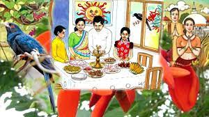
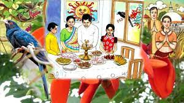
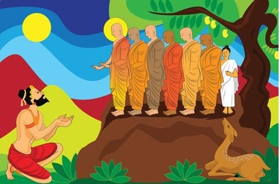
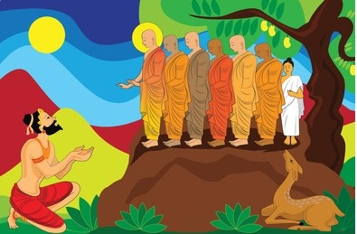
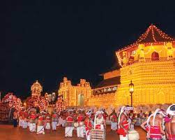
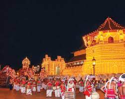

Sinhala & Tamil New Year
 
Sinhala and Hindu New Year, one of the most celebrated festivals, symbolizing prosperity and ethnic harmony in the country, is the time of joy and renewal for Sinhala and Tamil population in Sri Lanka. April 13th marks the journey of the Sun from Meena to Mesha (from Pisces to Aries) in the Zodiac advocating the dawn of a new year for Sri Lankans according to the Sinhala calendar.The New year vibe spreads all over the island since the beginning of the month of April although celebrated on 13th and 14th of April. New year festivals are held around the island throughout the month, comprising of different traditional games where both children and adults take part in to cherish this joyful period of the year.
Vesak
Vesak is the main Buddhist religious festival in Sri Lanka. During this time, people celebrate the triple anniversary of Lord Buddha - his birth, his attaining of Enlightenment and his passing away into Nirvana. Also known as the Buddhist Festival of Light, colorful bamboo framed lanterns adorn the interior of every home and incredible luminous displays decorate the streets of most towns. Visit Bhauddoloka Mawatha, the main street in Colombo, to catch this glowing spectacle in full glory. Vesak marks the first month of the Buddhist Calendar. This is a day spent in reflective prayer as people cease wordly pursuits and engage themselves in religious activities. Devotees Buddhists pray in temples from dawn until the dusk. As the sun sets, devotees partake in processions and return to the temples in the evening to hear monks read stories from sacred texts. Stalls on the roadside distribute free refreshments to passers-by and there are some fantastic mime and street theatre performances, staged on tall platforms near temples in cities and towns throughout the country.
Poson
 

Date: 14 June 2021
Marking the birth of Buddhism in Sri Lanka, Poson poya day is much celebrated event and
dates back in 3rd Century BC when king Devanampiyatissa was converted to Buddhism by Arahat
Maha Mahinda, the son of King Asoka, the Emperor of India, after which Buddhism was declared
the State religion.
The entire country celebrates this significant milestone, but it all culminates at
Mihintale, known as the cradle of Buddhism in Sri Lanka, for it is believed to be there that
the conversion took place. In fact it is in the Ambasthale Dagoba, the temple in Mihintale,
accessible by 1840 steps, that it is in believed that the historic encounter took place.
On Poson poya day, many devotees make their way to temple to spend reflective hours in
meditation while there are also several sil campaigns, Dan Sal, Poson devotional songs and
pandols among others.
Esala Perahra Festival
 

Kandy Esala Perahera is one of the oldest cultural and religious festivals in the world which
is taking place annually in Kandy.
Kandy Esala Perahera is one of the main tourist attracting events of the year attracting
over 200,000 tourists every year as the city of Kandy is a recognized World Heritage Site by
UNESCO